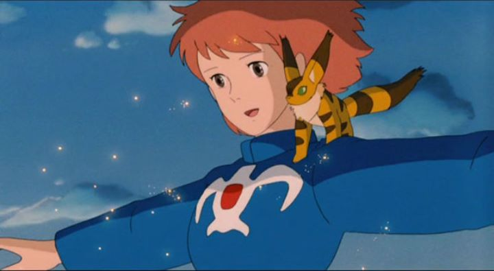

"Nausicaa of the Valley of the Wind" isn't exactly a title that rolls of the tongue, but the 1984 animated film would be the first step towards the existance of Studio Ghibli, the pride of Japan with a legacy to animation respected the world over. For that alone, it deserves a place in every film library and it deserves to be seen. However, it is an old film, and it hasn't aged perfecty.The story is the most timeless aspect of the movie. Set in a unique post-apocalyptic future, the world is both a dark and beautiful place. Nature has taken the world back from the overuse of humans, evolving large plants that spawn poisonous spores into the air, and supporting the existance of large bug-like animals the size of elephants that protect the area. Humans try to make out their place on the edges of the land where the spores haven't spread, but wars over materials by different factions make surviving difficult. Nausicaa is the princess of one warrior tribe, led by her unusual example to be peaceful to the animals and the forests, and to not resort to violence against fellow man unless necessary. But soon, war does become necessary, when a mobile tribe overtakes their land, threatens their people, and begins their plans to awaken a dangerous power. The story is very much ahead of its time, and will remain relevant for decades to come. The theme of protecting nature would recur many times over in Ghibli's later works. The story is told with great pacing and a satisfying ending... but I suspect too much material was put into a single film for certain plot elements to really resonnate, and crowding the film to nearly two hours doesn't do it any favors. Nausicaa herself is a flawless character, acting nearly like a Messiah devoid of any character traits to make her more relatable, resulting in a great role model to look up to, but also one that isn't easy to fully believe in. But I suppose her views on nature aren't so hard to understand.To put it simply, the visuals are dated. The environments are well-realized and imaginative, but the character designs are simplistic, and the animation is minimal where acceptable, despite their clever methods to animate larger creatures. The audio has some memorable themes, some of which rank high on Ghibli's music, but the rest will sound like generic video-game music. Walt Disney's most recent dub of the movie is acceptable, and a handful of roles are played well enough to be enjoyed, although the original Japanese is better suited. "Nausicaa" isn't as entertaining as Ghibli's other films, and the studio's animation has come a long way since their first movie. But the story and imagination are still original, and timeless enough for it to be enjoyed by fans of sci-fi fantasy.
- "Ani" More reviews can be found at : https://2danicritic.github.io/ Previous review: review_Napping_Princess Next review: review_Neon_Genesis_Evangelion